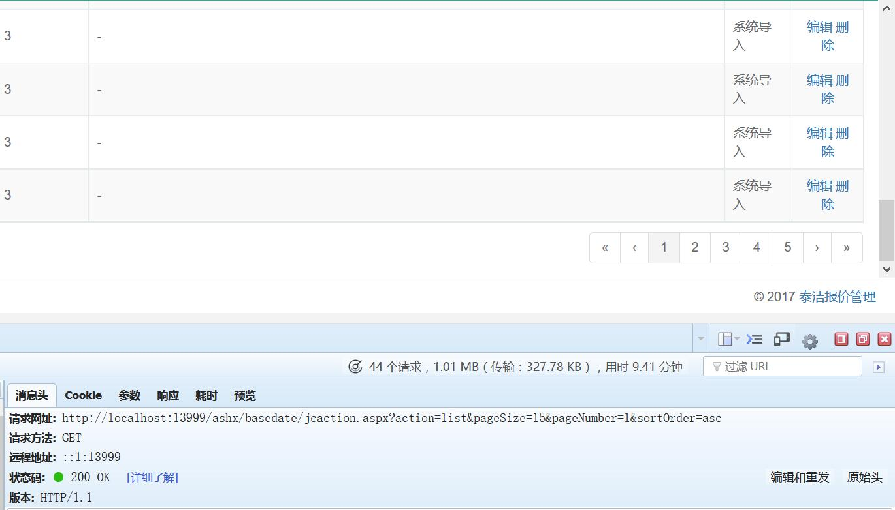

Bootstrap Table服务器端分页
首先不得不说Bootstrap Table实在是太好用了，工作中用的所有的表都是Bootstrap Table写的。以前都是用的客户端分页，一直没有出现问题。 直到现在做了一个资格审查的表，表格里都是企业法人代表的身份证照片，企业营业执照的照片。现在在测试阶段加载不到一页都要等好一会，要是平台起来了， 那一下子把表格数据都获取到岂不是要等半天？
于是终于狠下心来学Bootstrap Table服务器端分页
首先去前台页面修改参数，在$('#table').bootstrapTable({...});里加上（修改）这些属性就好：
sidePagination: 'server',//设置为服务器端分页
queryParamsType:"",//默认值为 'limit' ,在默认情况下 传给服务端的参数为：offset,limit,sort
// 设置为 "" 在这种情况下传给服务器的参数为：pageSize,pageNumberpageSize就是一页的行数，pageNumber就是当前的页码
可以在Firebug中看到参数的传递都是使用的GET方式传输的：
传第一页：
传第二页：
传输入的搜索条件
然后就是后端的接收代码，尼玛网上都是服务器端是Java的教程，尼玛就没有C#的吗？
只好自己写喽 ヽ(✿ﾟ▽ﾟ)ノ
int pageNumber =Convert.ToInt32( Request.QueryString["pageNumber"]);//取页码
int pageSize = Convert.ToInt32(Request.QueryString["pageSize"]);//取页面行数
DBEngine.SQL.SetSelect("*");
DBEngine.SQL.SetFrom("jcinfo", "m");
DBEngine.SQL.SetOrderBy("m.addtime desc");
//从数据库中取出所有要显示的数据，统计行数
DataTable dt1 = DBEngine.SQLExe.GetDataSet(DBEngine.SQL.ToSQLString();).Tables[0];
//根据页码和页面行数计算当前要显示的数据的开始点和结束点
int start = (pageNumber - 1) * pageSize + 1;
int end = pageNumber * pageSize;
DataTable dt = DBEngine.SQLExe.GetDataSet("select * from( SELECT m.*,ROW_NUMBER() OVER ( ORDER BY m.addtime desc ) AS Num FROM jcinfo m) t where t.Num between "+start.ToString() + " and " +end.ToString() ).Tables[0];
//将要显示的数据转换成json
string json = JsonConvert.SerializeObject(dt, new DataTableConverter());
//这里要加上所有要显示的数据的行数，不然什么都显示不出来
Response.Write("{\"total\":" + dt1.Rows.Count + ",\"rows\":" + json + "}");
至于搜索功能的话，反正拿得到searchText，也可以“同理”写出来的！
Bootstrap Table
2017-06-23